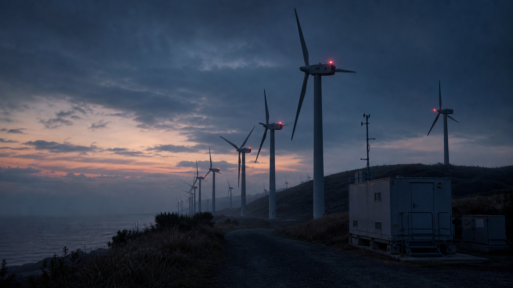

調査対象
発電実績、風速、四号機の3点を軸に資料を読む。
PUBLIC FACE / PRIVATE NOISE
風速ゼロの最大発電。公式の表情、検索に残った痕跡、匿名掲示板のざわめきを照合し、公開資料だけで違和感の芯を探してください。

青嵐風力発電所の停止予定日に、一基だけが風のない夜に回転していた。発電量は記録されていないが、保守員の端末には警告だけが残っている。
あなたは設備点検資料を受け取り、風況データ、保守ログ、見学案内を確認する。動力のない回転が示すのは、機械の故障か記録の改変か。
発電実績、風速、四号機の3点を軸に資料を読む。
公式ページの説明は整っているが、外部に残った断片は同じ出来事を少し違う順番で語っている。
公式、検索、掲示板を横断し、20問調査で答えを段階的に確認する。
GIMMICK LAYER
風車の回転方向を方角暗号にする
発電量グラフの谷を点検順に読む
止まった風車ではなく、止められなかった風車が鍵